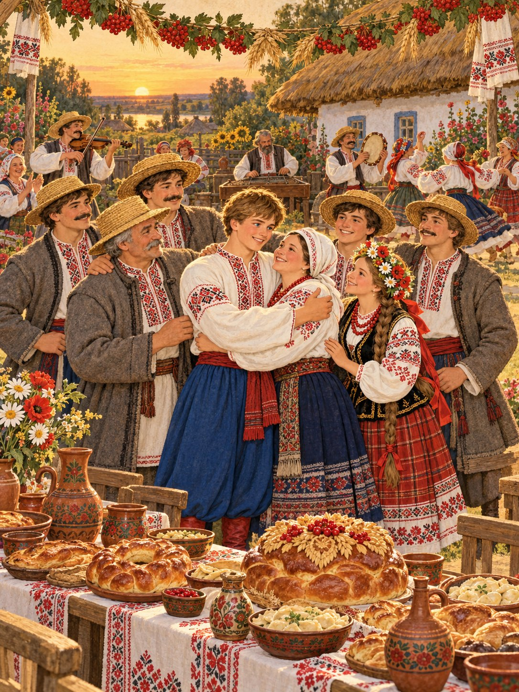

Батьки вийшли їм назустріч і не могли повірити своїм очам: усі діти повернулися живі й здорові. Мати плакала від радості, а батько міцно обіймав синів одного за одним.
Влаштували велике свято на все село. Столи ломилися від пирогів і калачів, грали музики, люди співали й танцювали до самого ранку.
Брати попросили в Котигорошка пробачення, і відтоді жили всі разом дружно й щасливо. А про Котигорошка-богатиря люди й досі розповідають казки.
